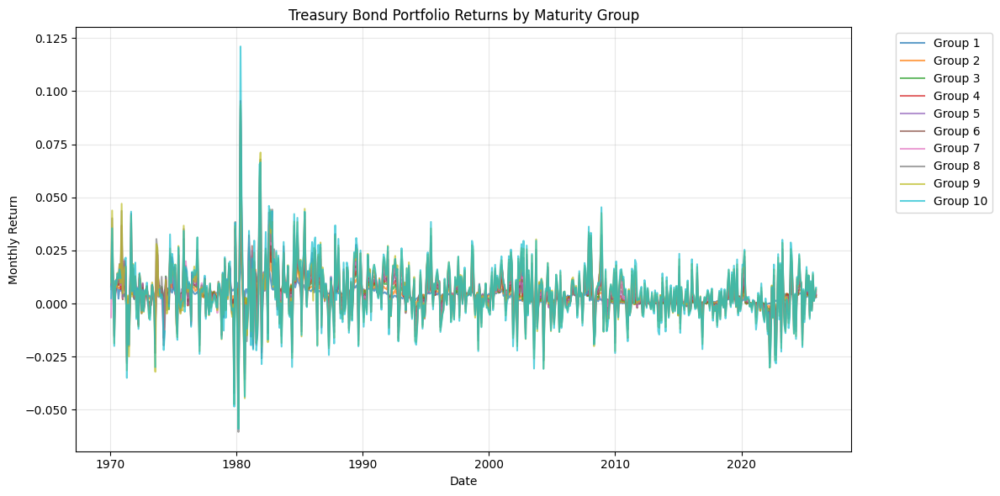
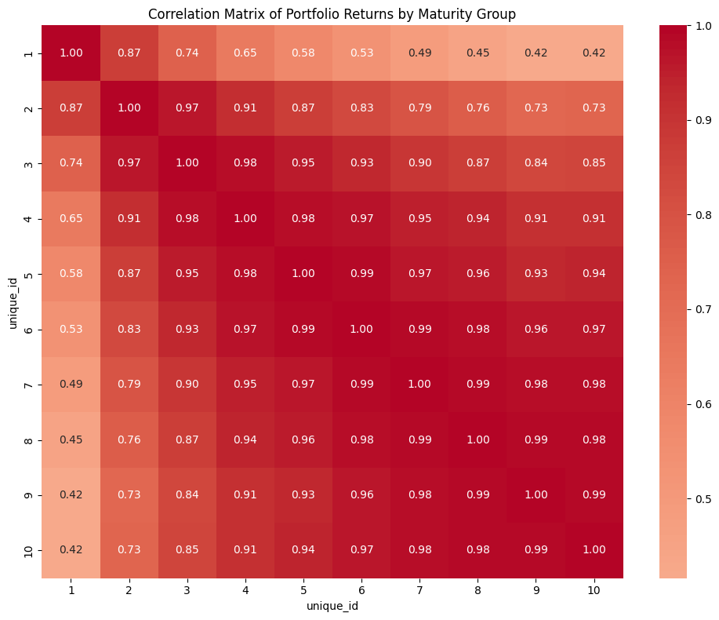
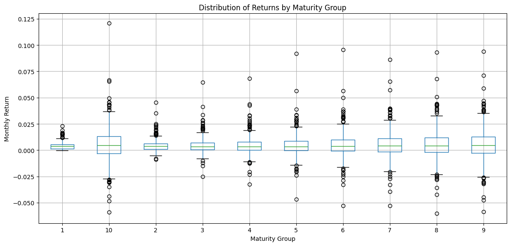

Treasury Bond Returns Summary#
import sys
sys.path.insert(0, "./src")
import pandas as pd
import matplotlib.pyplot as plt
import seaborn as sns
import chartbook
BASE_DIR = chartbook.env.get_project_root()
DATA_DIR = BASE_DIR / "_data"
Data Overview#
This pipeline produces Treasury bond returns data from CRSP, including:
Individual bond returns (daily and monthly)
Portfolio returns grouped by maturity buckets
Treasury auction statistics
On-the-run/off-the-run status
Data Cleaning and Construction#
The treasury bond returns dataset is constructed using the following cleaning and processing steps:
Bond Selection Criteria: Only include Treasury notes and bonds (itype 1 or 2)
Return Processing: Monthly returns are computed by compounding daily returns
Maturity Grouping:
Create 10 maturity groups using 0.5-year intervals from 0 to 5 years
Bins: [0.0, 0.5, 1.0, …, 5.0]
Each group represents a specific maturity range for analysis
Portfolio Construction:
Group bonds by date and maturity group
Calculate mean returns for each group
This creates a time series of portfolio returns for each maturity group
Individual Bond Returns#
df_bonds = pd.read_parquet(DATA_DIR / "ftsfr_treas_bond_returns.parquet")
print(f"Shape: {df_bonds.shape}")
print(f"Columns: {df_bonds.columns.tolist()}")
print(f"\nDate range: {df_bonds['ds'].min()} to {df_bonds['ds'].max()}")
print(f"Number of unique bonds: {df_bonds['unique_id'].nunique()}")
Shape: (122886, 3)
Columns: ['unique_id', 'ds', 'y']
Date range: 1970-01-31 00:00:00 to 2025-11-30 00:00:00
Number of unique bonds: 2070
df_bonds.describe()
| unique_id | ds | y | |
|---|---|---|---|
| count | 122886.000000 | 122886 | 122886.000000 |
| mean | 204571.007959 | 2005-01-16 17:09:02.610224 | 0.004152 |
| min | 200636.000000 | 1970-01-31 00:00:00 | -0.151354 |
| 25% | 202838.000000 | 1992-08-31 00:00:00 | -0.000821 |
| 50% | 204058.000000 | 2008-04-30 00:00:00 | 0.003071 |
| 75% | 206682.000000 | 2018-02-28 00:00:00 | 0.009221 |
| max | 208490.000000 | 2025-11-30 00:00:00 | 0.175190 |
| std | 2079.039331 | NaN | 0.016883 |
Portfolio Returns by Maturity Group#
df_portfolio = pd.read_parquet(DATA_DIR / "ftsfr_treas_bond_portfolio_returns.parquet")
print(f"Shape: {df_portfolio.shape}")
print(f"Columns: {df_portfolio.columns.tolist()}")
print(f"\nDate range: {df_portfolio['ds'].min()} to {df_portfolio['ds'].max()}")
print(f"Maturity groups: {sorted(df_portfolio['unique_id'].unique())}")
Shape: (6689, 3)
Columns: ['unique_id', 'ds', 'y']
Date range: 1970-01-31 00:00:00 to 2025-11-30 00:00:00
Maturity groups: ['1', '10', '2', '3', '4', '5', '6', '7', '8', '9']
# Summary statistics by maturity group
portfolio_stats = df_portfolio.groupby("unique_id")["y"].agg(
["count", "mean", "std", "min", "max"]
)
portfolio_stats.columns = ["Count", "Mean", "Std", "Min", "Max"]
portfolio_stats = portfolio_stats.sort_index(key=lambda x: x.astype(int))
portfolio_stats
| Count | Mean | Std | Min | Max | |
|---|---|---|---|---|---|
| unique_id | |||||
| 1 | 671 | 0.003807 | 0.003092 | -0.000283 | 0.023142 |
| 2 | 671 | 0.004238 | 0.004609 | -0.008939 | 0.045551 |
| 3 | 671 | 0.004443 | 0.006243 | -0.025195 | 0.064735 |
| 4 | 668 | 0.004461 | 0.007455 | -0.032362 | 0.068330 |
| 5 | 668 | 0.004470 | 0.008872 | -0.046647 | 0.091789 |
| 6 | 668 | 0.004833 | 0.010435 | -0.052993 | 0.095415 |
| 7 | 671 | 0.005002 | 0.011613 | -0.052765 | 0.086319 |
| 8 | 671 | 0.005147 | 0.012947 | -0.060457 | 0.093149 |
| 9 | 668 | 0.005137 | 0.013821 | -0.058666 | 0.093774 |
| 10 | 662 | 0.005117 | 0.014949 | -0.059056 | 0.121050 |
Time Series of Portfolio Returns#
# Pivot for plotting
df_pivot = df_portfolio.pivot(index="ds", columns="unique_id", values="y")
df_pivot = df_pivot[sorted(df_pivot.columns, key=int)]
fig, ax = plt.subplots(figsize=(12, 6))
for col in df_pivot.columns:
ax.plot(df_pivot.index, df_pivot[col], label=f"Group {col}", alpha=0.7)
ax.set_xlabel("Date")
ax.set_ylabel("Monthly Return")
ax.set_title("Treasury Bond Portfolio Returns by Maturity Group")
ax.legend(bbox_to_anchor=(1.05, 1), loc='upper left')
ax.grid(True, alpha=0.3)
plt.tight_layout()
plt.show()

Correlation Matrix#
Correlation between maturity groups shows how returns move together across the yield curve.
corr_matrix = df_pivot.corr()
fig, ax = plt.subplots(figsize=(10, 8))
sns.heatmap(corr_matrix, annot=True, fmt=".2f", cmap="coolwarm", center=0, ax=ax)
ax.set_title("Correlation Matrix of Portfolio Returns by Maturity Group")
plt.tight_layout()
plt.show()

Return Distribution by Maturity Group#
fig, ax = plt.subplots(figsize=(12, 6))
df_portfolio.boxplot(column="y", by="unique_id", ax=ax)
ax.set_xlabel("Maturity Group")
ax.set_ylabel("Monthly Return")
ax.set_title("Distribution of Returns by Maturity Group")
plt.suptitle("") # Remove automatic title
plt.tight_layout()
plt.show()

Treasury Auction Statistics#
try:
df_auction = pd.read_parquet(DATA_DIR / "treasury_auction_stats.parquet")
print(f"Shape: {df_auction.shape}")
print(f"\nSecurity types: {df_auction['securityType'].value_counts().to_dict()}")
print(f"\nDate range: {df_auction['auctionDate'].min()} to {df_auction['auctionDate'].max()}")
# Auction summary by type
auction_summary = df_auction.groupby("securityType").agg({
"totalAccepted": ["count", "mean", "sum"],
"bidToCoverRatio": ["mean", "std"]
}).round(2)
print("\nAuction Summary by Security Type:")
print(auction_summary)
except FileNotFoundError:
print("Treasury auction stats file not found")
Shape: (10829, 120)
Security types: {'Bill': 8117, 'Note': 2277, 'Bond': 435}
Date range: 1979-10-31 00:00:00 to 2026-01-22 00:00:00
Auction Summary by Security Type:
totalAccepted bidToCoverRatio
count mean sum mean std
securityType
Bill 8112 2.939846e+10 2.384803e+14 3.23 0.84
Bond 434 1.450009e+10 6.293038e+12 2.42 0.26
Note 2276 2.601891e+10 5.921904e+13 2.66 0.48
Maturity Group Definitions#
Group |
Maturity Range |
|---|---|
1 |
0 to 6 months |
2 |
6 months to 1 year |
3 |
1 year to 1.5 years |
4 |
1.5 to 2 years |
5 |
2 to 2.5 years |
6 |
2.5 to 3 years |
7 |
3 to 3.5 years |
8 |
3.5 to 4 years |
9 |
4 to 4.5 years |
10 |
4.5 to 5 years |